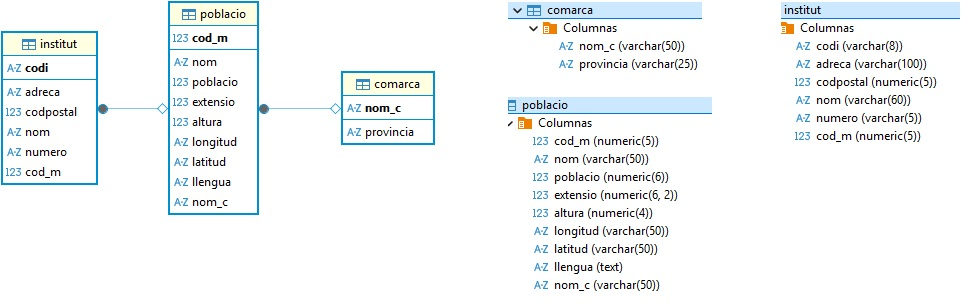
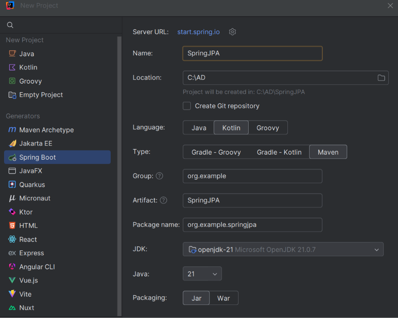
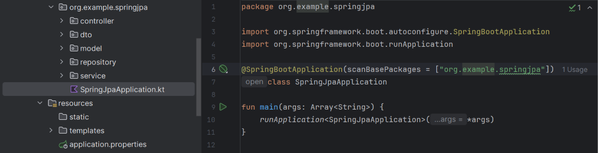

Preparación del proyecto¶
Base de datos¶
En este tema trabajaremos con la base de datos geo de PostgreSQL, con la que ya hemos trabajado en el tema 5 con JDBC, y que contiene información sobre comarcas, poblaciones e institutos. Sobre estos datos construiremos una aplicación con Spring Boot y Spring Data JPA.
Mantener las tablas y los datos nos permitirá centrarnos en cómo cambia el acceso a la información: pasaremos de escribir las sentencias SQL y transformar sus resultados manualmente a trabajar con entidades y repositorios.
Reutiliza la base de datos geo del T5 y comprueba que el servidor PostgreSQL está arrancado y tiene datos en comarca, poblacio e institut. Si todavía no la tienes, sigue la preparación de PostgreSQL y geo.

Crear la aplicación desde IntelliJ IDEA¶
En el tema 4, sobre Ficheros, creamos el proyecto con Gradle desde la web de Spring Initializr. En este tema utilizaremos Maven y el asistente de Spring Boot integrado en IntelliJ IDEA, para conocer otra forma de preparar una aplicación. El lenguaje seguirá siendo Kotlin: Maven se encarga de las dependencias, la compilación y el empaquetado.
- Abre File → New → Project.
- Selecciona Spring Boot en el asistente.
- Configura estas opciones:
| Opción | Valor |
|---|---|
| Name | SpringJPA |
| Language | Kotlin |
| Type / Build system | Maven |
| Group | org.example |
| Artifact | springjpa |
| Package name | org.example.springjpa |
| Packaging | Jar |
| JDK y Java | JDK 21. Selecciona Java 21 al crear el proyecto y utiliza ese mismo JDK como Project SDK y para ejecutar Maven en IntelliJ. Todos los proyectos deben compilarse y ejecutarse con esta versión. |

- En la selección de dependencias, añade Spring Web, Spring Data JPA, PostgreSQL Driver, Thymeleaf y Validation.
- Finaliza la creación y espera a que IntelliJ importe el proyecto y descargue sus dependencias.
Seleccionamos todas las dependencias desde el principio porque es más sencillo hacerlo con el asistente que incorporarlas manualmente al pom.xml más adelante. Así reducimos los errores de configuración y dejamos preparado el proyecto para todo el tema. No las utilizaremos todas de inmediato: iremos explicando su función conforme avancemos.
| Dependencia | Para qué la utilizaremos |
|---|---|
| Spring Web | En la primera aplicación, para atender peticiones HTTP desde un controlador. |
| Spring Data JPA | Para trabajar con entidades y repositorios y acceder a los datos. |
| PostgreSQL Driver | Para conectar la aplicación con PostgreSQL. |
| Thymeleaf | En el apartado de vistas, para generar páginas HTML. |
| Validation | Cuando utilicemos validaciones con anotaciones como @NotBlank o @Valid. No es necesaria para las comprobaciones manuales con condicionales. |
Spring Initializr
El asistente utiliza Spring Initializr internamente, pero realizamos los pasos desde IntelliJ. Si tu instalación no muestra la opción Spring Boot, puedes generar el mismo proyecto en Spring Initializr, seleccionando Maven y Kotlin, y abrir su pom.xml en IntelliJ.
El archivo pom.xml¶
Maven utiliza pom.xml para describir el proyecto y gestionar sus dependencias y plugins. Conserva las versiones compatibles generadas por el asistente.
Por ejemplo, al seleccionar Spring Data JPA y PostgreSQL se incorporan estas dependencias dentro de <dependencies>:
<dependency>
<groupId>org.springframework.boot</groupId>
<artifactId>spring-boot-starter-data-jpa</artifactId>
</dependency>
<dependency>
<groupId>org.postgresql</groupId>
<artifactId>postgresql</artifactId>
<scope>runtime</scope>
</dependency>
No las añadas otra vez si ya están presentes. Spring Boot gestiona sus versiones. Cuando modifiques el pom.xml, utiliza Reload All Maven Projects en la ventana de Maven para actualizar el proyecto.
El plugin de Kotlin¶
Busca kotlin-maven-plugin en pom.xml con Ctrl+F. Debe estar dentro de <build> → <plugins>, no en el bloque de dependencias de la aplicación. Dentro de su configuración encontrarás los plugins de compilador spring y jpa.
Este fragmento muestra dónde se sitúa cada elemento. Es un esquema orientativo, no un pom.xml completo: conserva las versiones, dependencias, ejecuciones y demás opciones que haya generado el asistente.
<build>
<plugins>
<!-- Aqui puede haber otros plugins, como el de Spring Boot -->
<plugin>
<groupId>org.jetbrains.kotlin</groupId>
<artifactId>kotlin-maven-plugin</artifactId>
<configuration>
<!-- Conserva las demas opciones de compilacion -->
<compilerPlugins>
<plugin>spring</plugin>
<plugin>jpa</plugin>
</compilerPlugins>
</configuration>
<!-- Conserva las dependencias y ejecuciones de este plugin -->
</plugin>
</plugins>
</build>
kotlin-maven-pluginpermite compilar el código Kotlin con Maven.springyjpason plugins del compilador Kotlin, configurados dentro decompilerPlugins; no son dependencias de la aplicación.- Si el plugin contiene su propio bloque
<dependencies>, déjalo dentro del plugin. No lo confundas con el bloque de dependencias general donde están Spring Data JPA y PostgreSQL. - Si estos elementos ya existen, no los dupliques ni sustituyas el plugin completo por este fragmento. Después de cualquier cambio, recarga el proyecto Maven.
Los plugins de compilador adaptan las clases Kotlin a las necesidades de Spring y JPA, como los constructores sin argumentos de las entidades. Desde Kotlin 2.3.20, el plugin jpa también incorpora la apertura de las clases JPA; conserva la configuración generada para tu versión.
Organización¶
En la raíz encontrarás pom.xml y el wrapper de Maven (mvnw y mvnw.cmd). Dentro de src/main, la estructura inicial básica incluye la clase de arranque y el archivo de configuración:
src/main/
├── kotlin/org/example/springjpa/
│ └── SpringjpaApplication.kt
└── resources/
└── application.properties
Los paquetes model, repository, controller, service y dto no los genera automáticamente Spring. Los crearás tú dentro de org.example.springjpa conforme los necesites en los siguientes apartados. También crearás la carpeta templates dentro de resources cuando trabajemos con las vistas, si todavía no existe.
El siguiente esquema muestra la organización que iremos construyendo a lo largo del tema, no la estructura que debes encontrar al crear el proyecto. No necesitas crear todos estos paquetes ahora:
src/main/
├── kotlin/org/example/springjpa/
│ ├── SpringjpaApplication.kt
│ ├── model/
│ ├── repository/
│ ├── controller/
│ ├── service/
│ └── dto/
└── resources/
├── application.properties
└── templates/
Mantén la clase de arranque generada en org.example.springjpa y crea los componentes dentro de sus subpaquetes. Cada apartado indicará qué archivos y paquetes necesitas añadir.
Conexión a PostgreSQL¶
Configura src/main/resources/application.properties:
spring.application.name=springjpa
spring.datasource.url=jdbc:postgresql://localhost:5432/geo
spring.datasource.username=postgres
spring.datasource.password=postgres
spring.jpa.hibernate.ddl-auto=none
spring.jpa.show-sql=true
spring.jpa.properties.hibernate.format_sql=true
Son las credenciales del entorno local del T5; adapta los valores si tu instalación es diferente. Spring configura las conexiones a partir de estas propiedades.
ddl-auto=noneevita que Hibernate cree o modifique las tablas.show-sqlpermite observar el SQL generado.
En Creación y actualización de las tablas se explican las opciones none, validate, update, create y create-drop, y cómo inicializar una base con scripts SQL. En este tema conservamos none porque reutilizamos geo.
Puesta en marcha¶
El asistente ya ha creado la clase de arranque SpringjpaApplication, anotada con @SpringBootApplication, y la función main. Al ejecutar esa función se inicia la aplicación y Spring configura sus componentes. La clase no se crea al arrancar: forma parte del código generado al preparar el proyecto. Conserva el nombre que haya generado tu asistente.

Ejecuta la clase de arranque y comprueba en la consola que Spring inicia sin errores de conexión a PostgreSQL.
Como ya hemos incluido Spring Web, se inicia el servidor web integrado, que escucha por defecto en el puerto 8080. Todavía no hemos creado controladores ni páginas, por lo que abrir la dirección raíz en el navegador puede mostrar una página de error 404; esto no significa que el arranque haya fallado. En la primera aplicación crearemos una ruta y probaremos el acceso por HTTP.